Data Structures and Algorithms
with Object-Oriented Design Patterns in Java
Data Structures and Algorithms
with Object-Oriented Design Patterns in Java
In this section we present a technique for solving a recurrence
relation such as Equation  called
repeated substitution .
The basic idea is this:
Given that 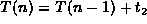,
then we may also write 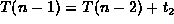, provided n>1.
Since T(n-1) appears in the right-hand side of the former equation,
we can substitute for it the entire right-hand side of the latter.
By repeating this process we get
called
repeated substitution .
The basic idea is this:
Given that 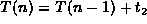,
then we may also write 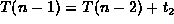, provided n>1.
Since T(n-1) appears in the right-hand side of the former equation,
we can substitute for it the entire right-hand side of the latter.
By repeating this process we get
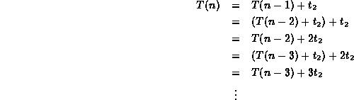
The next step takes a little intuition: We must try to discern the pattern which is emerging. In this case it is obvious:
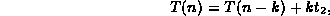
where 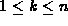. Of course, if we have doubts about our intuition, we can always check our result by induction:
extbfProof (By Induction). Base Case Clearly the formula is correct for k=1, since 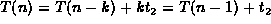.
Inductive Hypothesis Assume that 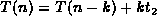 for 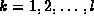. By this assumption
Note also that using the original recurrence relation we can write
for 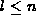.
Substituting Equation
in the right-hand side of Equation gives
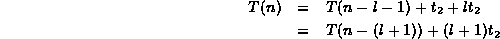
Therefore, by induction on l, our formula is correct for all 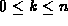.
So, we have shown that , for . Now, if n was known, we would repeat the process of substitution until we got T(0) on the right hand side. The fact that n is unknown should not deter us--we get T(0) on the right hand side when n-k=0. That is, k=n. Letting k=n we get
where 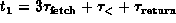 and 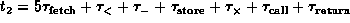.
 Copyright © 1998 by Bruno R. Preiss, P.Eng. All rights reserved.
Copyright © 1998 by Bruno R. Preiss, P.Eng. All rights reserved.